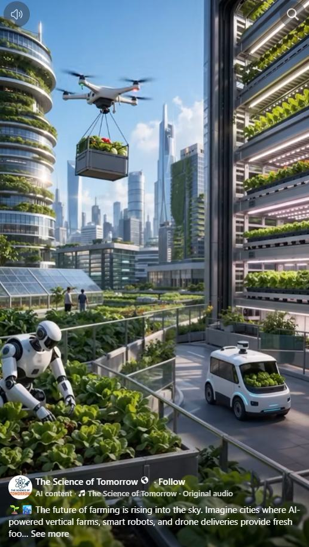

ARTICLE #015 · NOVEMBER 2026
The Future of Urban Farming
Turning rooftops, vacant lots, and city streets into a living food system.

The city itself can become a farm
Imagine looking across an American city and seeing more than concrete, glass, and asphalt. Rooftops hold vegetable gardens. Unused lots produce tomatoes and greens. Greenhouses occupy suitable terraces. Fruit trees provide shade and seasonal harvests along carefully selected streets. Buildings that once consumed resources without producing food become part of a local food network.
This is not a proposal to replace the farms that feed America. It is a proposal to make cities active participants in food production, reduce avoidable waste, and bring fresh produce closer to the people who need it.
Every suitable surface is an opportunity
A flat roof may support raised beds, lightweight hydroponic equipment, or a greenhouse—but only after engineers verify structural capacity, waterproofing, drainage, wind loads, and safe access. Empty lots can become gardens after soil testing for contamination. Balconies, courtyards, school grounds, and community centers may support smaller growing systems.
Even the spaces between buildings can help: edible landscaping and fruit trees can be planted where roots, utilities, sidewalks, accessibility, climate, and maintenance needs permit. Cities should design for both shade and food, without turning public sidewalks into hazards.
Vertical farming and aquaponics
Vertical farms can grow leafy greens and herbs on stacked shelves, sometimes in converted warehouses or commercial buildings. Hydroponics can recycle nutrient-rich water; aquaponics can combine fish cultivation with plant production. These systems can save land and, in some settings, water, but they require careful management of electricity, lighting, heating, water quality, nutrients, and food safety.
A citywide strategy should compare open-air gardens, greenhouses, hydroponics, and aquaponics by crop, climate, energy demand, cost, and harvest reliability. No single method is best everywhere.
Robots and AI can make the system work
Sensors could monitor water use, temperature, humidity, pests, and plant health. Software could forecast harvests and match supply with local demand. Robots could handle repetitive tasks such as moving trays or inspecting growing areas, while trained people supervise, maintain equipment, and make decisions.
Drones may eventually transport certain light loads where regulations, noise, safety, and economics permit. For many urban deliveries, electric vans, bicycles, and walking routes will remain more practical.
From growing food to sharing it
Production alone does not end hunger. The harvest must reach people. Terra Nova could connect neighborhood farms with Community Havens, Give & Take marketplaces, food pantries, schools, senior centers, and local kitchens. Surplus produce could be collected, refrigerated when necessary, and distributed promptly.
Residents could volunteer, learn agricultural skills, contribute seeds and equipment, and receive fresh food with dignity. The objective is not merely to grow more, but to make access easier and reduce the distance between abundance and need.
A practical pilot for an American city
Begin with one neighborhood. Inventory rooftops, vacant lots, public buildings, and potential partners. Select sites using engineering and environmental criteria. Establish a demonstration garden, a modest greenhouse or hydroponic unit, and a distribution partnership. Track pounds harvested, cost per pound, water and electricity use, volunteer hours, food safety, and the number of households served.
Publish results openly, including failures and operating costs. Expand only those designs that demonstrate clear benefits. Work with property owners, local governments, growers, universities, and community organizations to create a repeatable blueprint.
The Terra Nova vision
We already have sunlight, rain, technology, unused space, human knowledge, and communities that care. What we often lack is coordination. Urban farming offers one practical way to connect these resources.
Picture every major city contributing to its own food supply—gardens on suitable rooftops, fruit trees along appropriate sidewalks, and neighborhood farms integrated with local sharing networks. Why not begin?
There is no them. There is only us. We are one.
Terra Nova Development, Inc. | Concept proposal for public discussion
Support the work: https://buymeacoffee.com/billbuttso